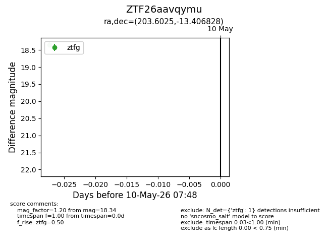
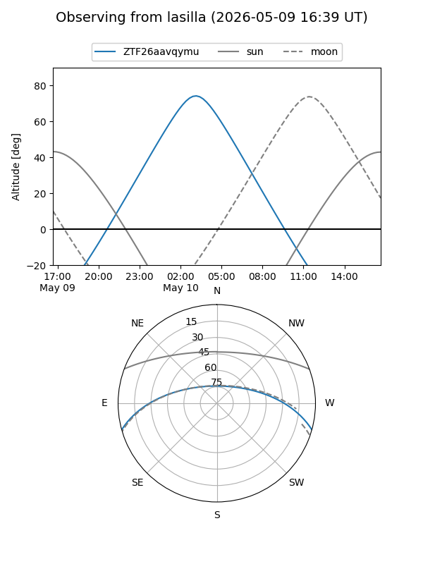
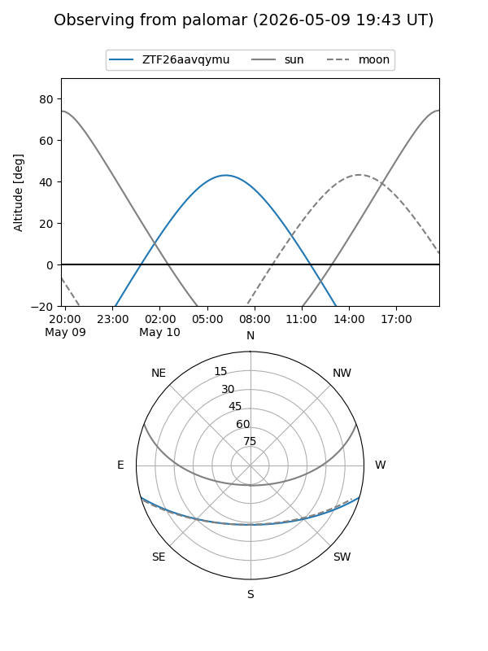

ZTF26aavqymu
Target ZTF26aavqymu at 2026-05-10 07:49
Aliases and brokers:
FINK: link
Lasair: link
ALeRCE: link
alt names
ZTF26aavqymu (ztf,fink_ztf)
Coordinates:
equatorial (ra, dec) = 203.6025,-13.40683
equatorial (HMS+DMS) = 13:34:24.59,-13:24:24.58
galactic (l, b) = (318.7003,+48.14490)
Flags:
Photometry:
last ztfg=18.34
1 ztfg detections
Lightcurve

Visibility


Additional plots